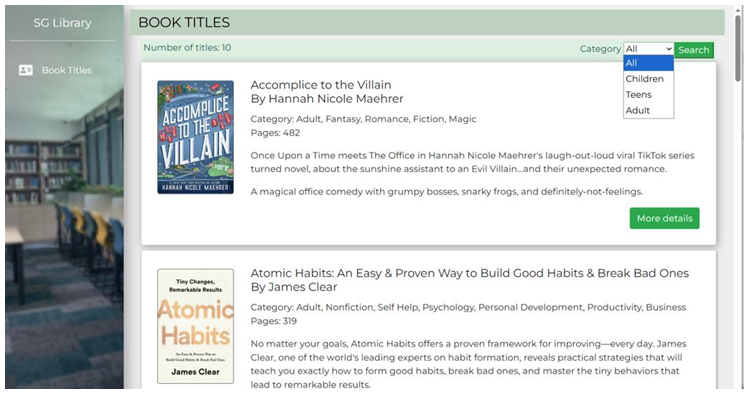
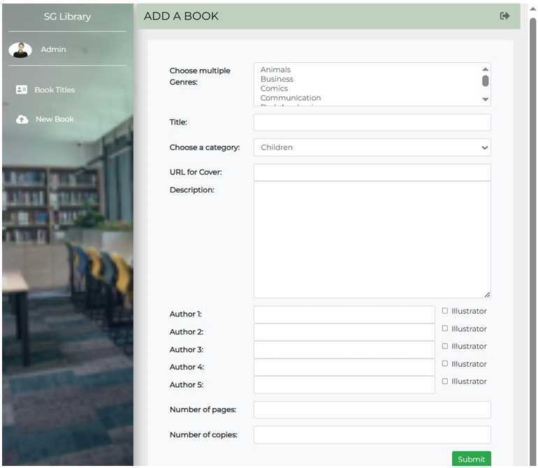

// ACADEMIC REPOS
SG Library Management System
// MAIN_CATALOG

// ADMIN_CONTROLS

// USER_LOAN_DASH

A full-stack solution bridging Information Technology and Digital Governance. Developed to automate manual workflows using Flask and MongoDB, ensuring data integrity through secure, authenticated protocols.
ARI SCORE: 0.85+
Predictive Analytics ML Pipeline

Python workflow using SVM/KNN and GridSearchCV for high-dimensional data optimization.
VIEW_ML_NOTEBOOK